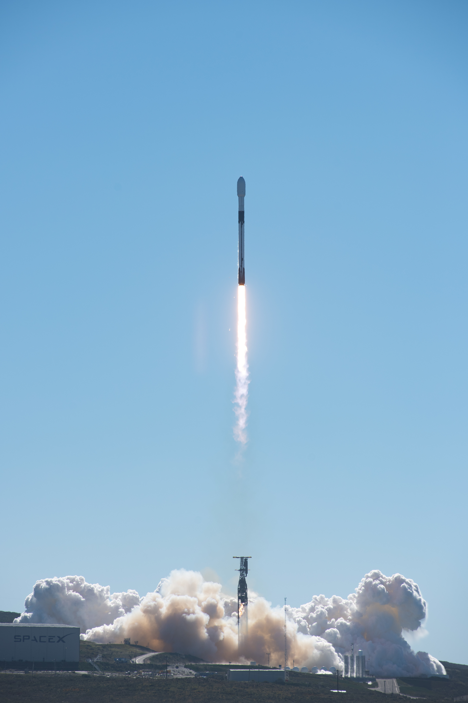
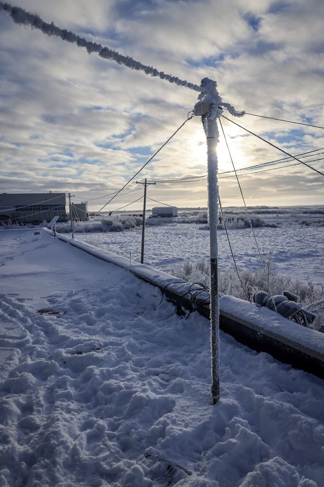

.jpeg){kind=link}

Dimostrato
Lanci Falcon 9 dal sito californiano.
Infrastrutture · Scheda tecnica 25
Il sito californiano che permette traiettorie utili per molte orbite polari ed eliosincrone. La geografia offre opportunità e impone vincoli.
Stato al 10 ottobre 2026: Operativo
Leggi i dati Controlla le fonti
Riferimento: documenti citati a fondo pagina, letti con le rispettive date. Stato editoriale al 10 ottobre 2026.
Per raggiungere un’orbita conta la direzione dell’ascesa rispetto alla rotazione terrestre e alle aree sorvolabili. La costa pacifica rende disponibili traiettorie differenti da quelle della Florida.
SLC-4E è la rampa Falcon 9 descritta nella guida del 2025. Il sito e altre aree di lancio hanno una storia distinta; un progetto su SLC-6 non autorizza a contare automaticamente voli Falcon Heavy operativi da lì.
Orbite polari ed eliosincrone non sono sinonimi: l’eliosincronia richiede parametri specifici. Il carico e i margini di recupero dipendono dalla traiettoria; non ogni missione verso nord usa lo stesso profilo.
Lanci Falcon 9 dal sito californiano.
Sviluppi di altre infrastrutture secondo documenti e autorizzazioni datati.
Qualifica delle nuove installazioni e del relativo servizio.

Consultazione editoriale: 10 ottobre 2026. Le date dei singoli documenti sono distinte dalla data della scheda.